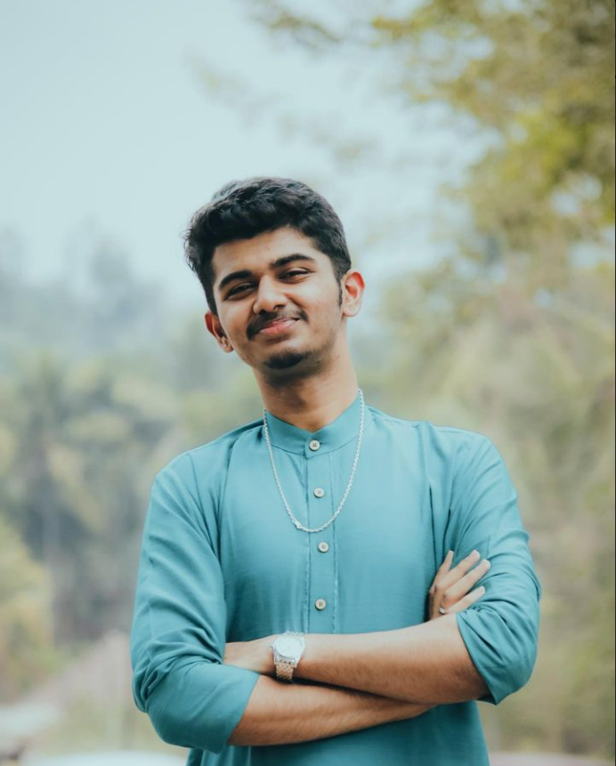

~ STUDENT PROFILE ~

This is ATHUL N RAO's profile. This page contains Athul's personal information.
I am an inquisitive and determined individual with a passion for exploring the intersection of technology
and art. My insatiable curiosity has led me to delve into various coding languages, enabling me to create
captivating digital artworks that seamlessly blend creativity with innovation. Outside of my digital
endeavors, I'm an avid traveler, always seeking new landscapes to inspire my next masterpiece. My friendly
and approachable demeanor makes me a natural collaborator, often finding myself engaged in brainstorming
sessions with fellow artists and tech enthusiasts.
| Name |
Athul N Rao |
| Father's Name |
Dr. Naveen Rao |
| Date Of Birth |
25/03/2004 |
| Gender |
Male |
| Contact Email |
nnm22cs035@nmamit.in |
| Address |
Nanthoor,Mangalore-05 |
Education Qualification
| Degree |
Institution |
Year |
| BTech in CSE |
NMAMIT, Nitte University |
2026 |
| PUC |
Sharada PU College |
2022 |
| 10th STD (CBSE) |
Sharada Vidyalaya |
2020 |
SKILLS
- C++
- HTML
- CSS
- Blockchain_Dev
HOBBIES
- Photography
- Beatboxing
- Coding